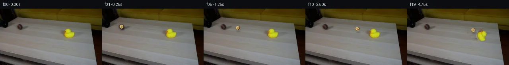

![首帧]()

Round 00
2026-11-04T23:33:24.122190+00:00像素候选变化代码 +214/−0inspection 更新
pixels a71f7f63a030359e · code 0803e1886d6689c5
查看本轮 generate.py 真实 diff
--- previous/generate.py
+++ current/generate.py
@@ -0,0 +1,214 @@
+"""PixelWorld-Text case_0009 generator.
+
+Scene: a brown tennis ball rolls straight out of a black pipe (mouth at the
+left/back edge of a beige coffee table) and knocks over a small yellow rubber
+duck; mustard couch in the background. Locked-off camera, 20 frames, 4 fps.
+
+Method (local pixel operations only):
+ * frame 00 is a byte-exact copy of first_frame.png;
+ * static pixels are copied from frame 0;
+ * the duck is cut out as an RGBA sprite against an inpainted table patch
+ (same-row interpolation + cloned static grain), then rigidly rotated
+ about its base pivot after impact;
+ * the ball is rendered analytically per frame (anti-aliased brown-felt
+ disc, radial shading, spinning curved seam, soft contact shadow).
+"""
+from pathlib import Path
+import numpy as np
+from PIL import Image, ImageFilter
+from scipy import ndimage
+
+HERE = Path(__file__).parent
+SS = 3 # supersampling factor for analytic patches
+R = 5.5 # ball radius, px
+
+# ---------------------------------------------------------------- geometry
+# ball centre trajectory (centre x per frame, shallow perspective descent)
+BX = [None, 50.0, 59.0, 68.0, 77.0, 86.0, 95.0, 104.0, 113.0, 122.0,
+ 131.0, 140.0, 149.0, 158.0, 159.5, 161.0, 162.5, 164.0, 165.0, 166.0]
+
+def ball_y(x):
+ return 46.5 + (x - 50.0) * 0.074
+
+# duck tip state from frame 14: clockwise angle (deg) and rightward shift
+TIP = {13: (0.0, 0), 14: (6.0, 0), 15: (16.0, 1), 16: (28.0, 2),
+ 17: (42.0, 3), 18: (56.0, 4), 19: (66.0, 5)}
+
+# ------------------------------------------------------------ table inpaint
+def build_table_background(frame):
+ """Return frame with the duck + its contact shadow replaced by table."""
+ h, w, _ = frame.shape
+ bg = frame.copy()
+
+ x0, x1, y0, y1 = 154, 195, 47, 81 # hole bounds (inclusive-ish)
+ # clean boundary medians, per row
+ for y in range(y0, y1):
+ L = np.median(frame[y, 146:155].reshape(-1, 3), axis=0)
+ Rr = np.median(frame[y, 195:204].reshape(-1, 3), axis=0)
+ t = np.linspace(0.0, 1.0, x1 - x0)[:, None]
+ base = L[None, :] * (1 - t) + Rr[None, :] * t
+ # static grain cloned from a clean table strip at the same rows
+ sy = y
+ src = frame[sy, 70:141].astype(np.float32)
+ trend = np.linspace(src[0], src[-1], src.shape[0])
+ resid = src - trend # high-frequency wood grain
+ for i, x in enumerate(range(x0, x1)):
+ r = resid[(x - x0) % resid.shape[0]]
+ bg[y, x] = np.clip(base[i] + r, 0, 255)
+ return bg
+
+
+# --------------------------------------------------------------- duck sprite
+def build_duck_sprite(frame, bg, crop=(156, 192, 48, 81)):
+ """Cut the duck out of the original frame as an RGBA sprite."""
+ x0, x1, y0, y1 = crop
+ orig = frame[y0:y1, x0:x1].astype(np.int16)
+ table = bg[y0:y1, x0:x1].astype(np.int16)
+ diff = np.abs(orig - table).sum(axis=2)
+ alpha = (diff > 34).astype(np.uint8) * 255
+ alpha = ndimage.binary_closing(alpha > 0, iterations=1)
+ alpha = ndimage.binary_opening(alpha, iterations=1)
+ # keep only components attached to the yellow core
+ r, g, b = orig[..., 0], orig[..., 1], orig[..., 2]
+ yellow = (r > 130) & (g > 130) & (b < 115)
+ lbl, n = ndimage.label(alpha)
+ keep = np.zeros_like(alpha)
+ if yellow.any():
+ ylbl = set(np.unique(lbl[yellow])) - {0}
+ for i in ylbl:
+ keep |= lbl == i
+ alpha = ndimage.binary_dilation(keep, iterations=1).astype(np.uint8) * 255
+ rgba = np.dstack([orig.astype(np.uint8), alpha])
+ return Image.fromarray(rgba, 'RGBA'), crop
+
+
+def rotated_duck(sprite, crop, angle_deg, shift):
+ """Rotate the sprite clockwise about its base pivot, returns RGBA image
+ and top-left placement (the pivot stays at the same table point)."""
… diff truncated; 127 more lines …